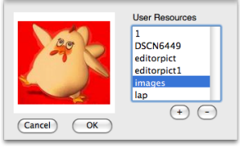

OpenMusic DocumentationHiérarchie de section : OM 6.6 User Manual > Visual Programming I > Pictures
OpenMusic DocumentationHiérarchie de section : OM 6.6 User Manual > Visual Programming I > Pictures
Navigation : page précédente | page suivante
Attention, votre navigateur ne supporte pas le javascript ou celui-ci à été désactivé. Certaines fonctionnalités de ce guide sont restreintes.
Background Pictures
Pictures can be added as a background or illustration for patch editors.
Creating a Background Picture
To add a picture box in a patch editor :
|
Choose an item among the registered User Resources of the Picture Chooser, and click on OK.
- To add a resource, press
+and select an item from any location in your computer. - To delete a resource, press
-.

Resources and Picture Chooser
Managing Background Pictures
Selection / Delete
|

|
The Picture Object
A Picture object also exist in OM, and allows to create and edit pictures as a standard OM object. It is possible to convert a background picture to a picture object and vice-versa.
More About Picture Objects
Références :
Plan :
Navigation : page précédente | page suivante
A propos...(c) Ircam - Centre Pompidou